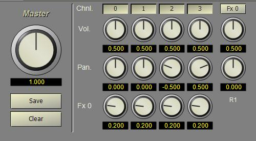

Right-click on the Mixer project entry and select Properties. The Mixer configuration form will be displayed.

Enter 4 in the Inputs field to create four input channels. Enter R1 in the Fx Name field and then select reverb in the Fx Type combo box. Click the + button to add the reverb unit to the mixer. Leave the pan setting on Trig Pan. Press OK to close the form. Double-click on the Mixer project item, or right-click and selet Edit, to open the Mixer editor.
The large knob on the left sets the master volume. This value will vary the overall output level of the combined input channels. Values greater than 1 provide gain, while values less than 1 attenuate the sound.
Changes made in the mixer editor are applied immediately to the mixer. However, sound playback can sometimes alter the internal mixer settings so that they do not match the editor settings. The Set button can be used to reset the mixer to the editor settings. The Clear button clears the mixer buffers.
The Mixer channels are arranged in columns and numbered starting with 0. The button at the top of each channel turns the input on or off. The Vol. knob sets the relative volume and the Pan knob sets the left-to-right position (balance) of the input. The Fx 0knob sets the amount of the input sent to the reverb unit. The Effects units (Fx) are shown to the right of the input channels. The button at the top of the effects unit opens a form to set the configuration for the effect. The Vol. knob sets the attenuation on the effect and the Pan knob sets the balance for the effect output.
Set the Pan value for input channel 2 to -0.5 and the Pan value for channel 3 to +0.5. Set the Send value for each channel to 0.2 and the Reverb level to 0.5. Click on the button labeled Fx 0 and set the Reverb Time field to 2 seconds then click OK. Close the editor.
Next: Configure an instrument...